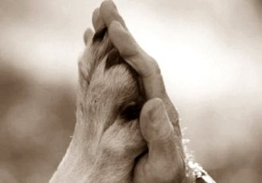

Adopta un caine
Charlie
Buna! Eu sunt Charlie:). Am 5 kg, talie mica. Sunt tare slab dar m-a luat un om si mi-a promis ca ma va pune pe picioare si imi va gasi un om al meu. Am fost chinuit dar sper ca de acum imi va fi bine….daca crezi ca ma vrei in familia ta si ma vei putea iubi ia legatura cu omul care are acum grija de mine insa spune ca nu mai pot ramane mult la el.
Cicorica
Catelusa tanara, jucausa, aprox. 1 an, sterilizata, microcipata si vaccinata, talie medie-mica in jur de 12kg, blanita semilunga, pentru adoptie la curte in bucuresti/ilfov.
Bursuc
Pui catel, cu blana foarte frumoasa, catifelata, jucaus, mic – in varsta de aproximativ 2-3 luni. S-a ratacit, este trist si infrigurat, are nevoie de un camin si un stapan iubitor!
6 pufosi cauta prieteni
Sase catelusi cu mama ciobanesc romanesc de talie medie si tata negruliu cauta parinti adoptivi prietenosi. Albisoarele sunt fete, mai au doua surori si doi frati negruti. Sunt deocamdata neintarcati dar au inceput sa manance diversificat, le plac tare copii si se antreneaza zilnic pentru misiunea de aparatori ai casei. Pot fi transportati in imprejurimile Pitestiului, Bucurestiului, Sibiului, Craiovei si chiar mai departe.